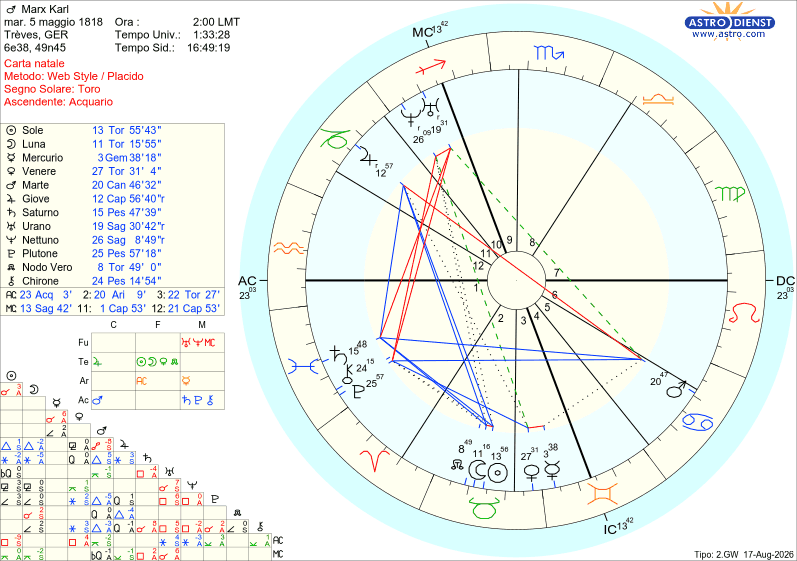

Biografie
Karl Marx
Tema natale e analisi astrologica secondo il metodo morpurghiano
NATO A TREVIRI (GERMANIA)
IL 5/05/1818 ALLE ORE 02:00
Toro Ascendente Acquario

Avete mai provato a far cambiare parere a un Toro? È quasi impossibile, soprattutto quando entrambi i luminari (Sole-Luna) si trovano lì congiunti: ciò che si sente e ciò che si desidera, allora, coincidono, e le proprie posizioni diventano granitiche e impossibili da sgretolare. Se inoltre, come in questo caso, Plutone e Saturno sono collocati in I Casa al trigono di Marte, fargli cambiare idea diventa un'impresa impossibile. Plutone, infatti, in aspetto a Marte dona una forte grinta e capacità di imporsi con sicurezza e passionalità viscerale, e può rendere anche vendicativi. Inoltre, in I Casa, fa sì che si sia dei protagonisti naturali anche senza volerlo.
Saturno in I Casa dà la granitica convinzione di aver vagliato ogni singolo dettaglio con rigore scientifico, disciplina e realismo, e ciò giustifica quel portare avanti le proprie idee con il forte spirito battagliero di Marte.
Sto parlando del grande "filosofo-economista rivoluzionario" Karl Marx.
Le fonti storiche e le testimonianze dell'epoca ci restituiscono l'immagine di un uomo dal temperamento fortemente estroverso, focoso, irascibile, passionale e dominatore, che amava stare al centro dell'attenzione (Plutone in I trigono a Marte). Parlava a voce alta, si appassionava fino a urlare, gesticolava e sopraffaceva gli interlocutori con la sua sterminata cultura. Non accettava le critiche. Se qualcuno dissentiva con la sua analisi economica o politica, Marx lo attaccava in modo spietato, usando un sarcasmo tagliente e insulti personali, perché era convinto che il suo non fosse un "pensiero tra i tanti" ma la struttura della realtà stessa (Socialismo Scientifico). Nella sua mente, chiunque si opponesse non stava solo dissentendo, ma stava letteralmente negando la logica e la realtà dei fatti, perché quanto andava affermando era il risultato di un'analisi rigorosa dei dati che lui stesso aveva raccolto. Ha passato infatti decenni nella biblioteca del British Museum a studiare le statistiche industriali, i bilanci delle fabbriche, i dati sull'import-export e le leggi economiche inglesi.
Tuttavia non può essere considerato un tipico estroverso, perché non concepiva il tempo libero come semplice "socializzazione casuale": per lui le relazioni umane esterne alla famiglia dovevano servire a uno scopo — la causa rivoluzionaria — ed era disposto a frequentare solo chi era pronto a marciare al suo stesso ritmo e sotto la sua stessa bandiera. Osservate bene il grafico del Tema Natale e potete così notare che tutti i pianeti si trovano nell'emisfero di sinistra (indice di forte concentrazione su sé stessi), tranne Marte, che riesce a trascinarlo fuori spinto da ciò che lo appassiona davvero o da tutto quello che riguarda il suo lavoro (Marte si trova congiunto alla cuspide della VI Casa). Anche l'emisfero inferiore è molto popolato da pianeti, e solo alcuni di essi riescono a farlo uscire dalla sua zona di comfort rappresentata dal suo ambiente:
il rivoluzionario Urano e Nettuno, il signore della metamorfosi, entrambi in X Casa, quella della realizzazione; e Giove in XI Casa, gli obiettivi e i progetti.
La sua vera apertura verso l'esterno, dunque, non nasceva mai da un semplice bisogno di compagnia, ma dalla necessità viscerale di compiere la propria missione nel mondo.
Se nella vita pubblica era un leone aggressivo e polemico, in famiglia la sua estroversione si trasformava in calore affettuoso. In casa lo chiamavano affettuosamente "The Moor" ("il Moro", per via della sua carnagione scura e della sua folta barba nera — caratteristica di Plutone in I Casa). Le figlie lo adoravano. Marx giocava con loro a terra facendo il "cavalluccio", si faceva tirare la barba, inventava storie fantastiche a puntate che duravano mesi e partecipava ai loro spettacoli teatrali casalinghi su Shakespeare.
Tutto questo trova una precisa spiegazione nei simboli astrologici. La cuspide della IV Casa è in Gemelli e Mercurio, il suo governatore, è collocato nella cosignificante III Casa nel segno dei Gemelli. La Quarta Casa rappresenta le radici, la famiglia d'origine e, tradizionalmente, una delle due figure genitoriali. Quando il suo governatore si trova in Terza Casa nel segno dei Gemelli, il suo domicilio primario e la sua Casa cosignificante, la dinamica genitoriale è impregnata di comunicazione, stimolo intellettuale, spontaneità e giocosità. Mercurio qui funziona al massimo delle sue capacità: porta un'energia giovanile, la voglia di spiegare il mondo attraverso il gioco, il racconto, la lettura e il contatto verbale diretto. Il padre tende a porsi non come figura autoritaria rigida, ma come un compagno di giochi o una guida comunicativa. La congiunzione con Venere in Toro aggiunge un'impronta di grande affettività, calore fisico, dolcezza e senso di protezione.
Marx riuscì anche a costruire un'eccellente relazione sia con la moglie sia con l'amico Engels. Anzi, è stato proprio grazie al sostegno di quest'ultimo che le sue teorie — preziose e in gran parte ancora attuali — sono giunte fino a noi. Queste due relazioni meritano di essere approfondite, perché il Tema Natale le sottolinea con tutta la sua potenza simbolica.
LA MOGLIE JENNY
Jenny era di nobile origine (figlia del barone von Westphalen) e considerata una delle ragazze più belle e corteggiate della nobiltà di Treviri. Marx era più giovane di lei di quattro anni e veniva da una famiglia borghese. Si fidanzarono in gran segreto nel 1836, quando Marx aveva solo 18 anni, e dovettero aspettare ben sette anni prima di potersi sposare (nel 1843), affrontando l'opposizione della famiglia di lei. Per stare con Karl, Jenny rinunciò ai privilegi, al titolo nobiliare, ai balli di corte e alla sicurezza economica, scegliendo una vita da perenne profuga e ricercata politica.
Era una donna estremamente colta, parlava diverse lingue e leggeva tutti i manoscritti di Karl. Poiché la grafia di Marx era quasi illeggibile, era Jenny a trascrivere pazientemente a mano gran parte delle sue opere, comprese le prime stesure del Capitale e del Manifesto. Curava la corrispondenza con i rivoluzionari europei e gestiva i rapporti con la stampa.
La prova più dura per la coppia fu la miseria nera vissuta durante l'esilio a Londra tra gli anni '50 e '60 dell'Ottocento. Dei sette figli, infatti, quattro morirono in tenera età a causa delle pessime condizioni igieniche e della mancanza di cure mediche. Ci fu solo un episodio ombroso nella loro vita coniugale: il tradimento di Marx con la governante. Infatti, nel 1851, mentre Jenny era in viaggio in Olanda per cercare finanziamenti, tra Karl e la governante ci fu una relazione da cui nacque un figlio illegittimo. Per evitare uno scandalo che avrebbe distrutto il matrimonio di Marx e la sua reputazione politica, fu il fedelissimo Friedrich Engels a prendersi la paternità ufficiale del bambino, cresciuto poi da una famiglia affidataria.
Nonostante le sofferenze, le tragedie e le ferite, il legame sentimentale tra i due rimase fortissimo per tutta la vita. E non poteva che essere così, data la presenza della congiunzione Sole/Luna e di Venere in Toro, che è per natura il segno della fedeltà, della resistenza nel tempo, dell'attaccamento a un progetto una volta scelto. Non è un amore che si accende e si consuma, ma una struttura solida, costruita mattone su mattone — anche perché la congiunzione non solo è collocata in Toro, ma anche nella cosignificante Casa II, e suggerisce qualcosa che si "possiede" e si custodisce, non che si consuma nell'effimero. Inoltre, la fusione di Sole/Luna in II Casa ci suggerisce che la moglie non è percepita come "altro da sé", ma quasi come parte integrante del proprio patrimonio interiore. La sicurezza economica/materiale e la sicurezza emotiva si sovrappongono nella figura coniugale.
Ma quello che rende ancora più speciale questa unione è il sestile tra Venere in III Casa e Plutone in Pesci in I Casa, che indica un attaccamento profondo, quasi totalizzante, dove l'identità stessa del soggetto (prima casa) viene rimodellata dal rapporto d'amore. È come se ci si sentisse nutriti anche a livello intellettuale (III Casa). Singolare è poi il segno della Vergine intercettato in VII Casa, perché Jenny non è stata solo una moglie ma anche una vera e propria compagna di lavoro. L'astrologia precisa anche in che modo ha collaborato alle opere di Marx: la congiunzione Venere/Mercurio in III Casa non lascia dubbi sul suo ruolo di copista e "segretaria" dei manoscritti di Marx, oltre che coordinatrice della sua corrispondenza politica.
IL CARO AMICO ENGELS
Engels era un uomo brillante, ma era il primo a riconoscere di non avere il genio filosofico e teorico di Marx. Nelle sue memorie scriverà con assoluta umiltà e senza risentimento:
"Marx era un genio, noi altri tutt'al più dei talenti. Senza di lui la teoria sarebbe ben lontana dall'essere ciò che è oggi. Perciò egli ha giustamente occupato il primo posto."
Senza Marx, Engels sarebbe stato probabilmente "solo" un ricco industriale tessile con idee radicali e qualche bel saggio pubblicato. Marx gli diede la possibilità di partecipare alla costruzione di un sistema filosofico destinato a lasciare un segno nel mondo. Ed è proprio questo il motivo per cui lo finanziava: non era un "favore personale" a un amico bisognoso, ma un investimento politico nella rivoluzione. Engels sapeva che Marx era l'unico uomo capace di scrivere Il Capitale, ma sapeva anche che se Marx avesse dovuto trovarsi un lavoro ordinario in un ufficio o in un giornale per sfamare la famiglia, non avrebbe mai avuto il tempo e la concentrazione per finire l'opera. Mantenere Marx era il modo in cui Engels contribuiva alla causa comune.
Se osservate il Tema Natale di Marx potete vedere un bel Giove in Capricorno in XI Casa. Questa configurazione parla di amicizie che si costruiscono con serietà, lealtà e senso di responsabilità nel tempo — non legami superficiali, ma relazioni "strutturate". Il trigono al Sole/Luna in Toro in II Casa conferma fortemente il sostegno economico da parte dell'amico. La II Casa, infatti, è il dominio delle risorse materiali, e il Toro è il segno per eccellenza legato al valore concreto delle cose. Poiché sono coinvolti entrambi i luminari, non è solo il supporto pratico a essere chiamato in causa, ma viene toccato anche il nucleo dell'identità (Sole) e dell'equilibrio emotivo (Luna). Non per niente, quando non vivevano nella stessa città, si scrivevano anche due o tre lettere al giorno. Marx con lui si confidava molto, gli parlava di qualsiasi cosa lo affliggesse. D'altra parte Marx si sentiva in dovere di far partecipare l'amico a quella che era la sua grande missione (Saturno in Pesci in I Casa al sestile di Giove), e così fece in modo che Engels non fosse mai visto come un "semplice finanziatore", ma come il co-fondatore a tutti gli effetti del socialismo scientifico.
Finora ho parlato di Marx come uomo: il suo temperamento, le sue relazioni intime e di amicizia. Ma, come disse al funerale il suo amico Engels, Marx era prima di tutto un rivoluzionario: "La sua vera missione nella vita è stata quella di contribuire, in un modo o nell'altro, all'abbattimento della società capitalistica e delle istituzioni statali che essa ha creato [...] La lotta era il suo elemento. Ed egli ha lottato con una passione, una tenacia e con un successo quali pochi hanno conosciuto."
Ed è proprio nel descrivere tutto questo che sentiamo il suo Tema Natale pulsare ed esprimersi al massimo.
A cominciare da Urano/Nettuno in Sagittario in X Casa, che è sicuramente la firma del rivoluzionario. È infatti una combinazione potente. Il Sagittario è il segno dell'ideologia, della visione filosofica totalizzante, della verità universale da diffondere; la X Casa è la vocazione pubblica, l'eredità che si lascia al mondo, mentre Urano rappresenta la rivoluzione e la rottura radicale con il passato. Poiché è congiunto a Nettuno (dissoluzione dei confini, utopia, visione quasi mistica/messianica), descrive bene qualcosa che va oltre la riforma: una vocazione pubblica a dissolvere l'ordine esistente in nome di una visione universale e utopica. Marx, infatti, non voleva semplicemente ottenere migliori condizioni per il proletariato, ma desiderava rivoluzionare tutto il sistema. Il suo obiettivo finale era rappresentato da un mondo quasi idilliaco in cui non ci sarebbero stati più lo Stato, le classi sociali, né i magistrati o la polizia, e dove ognuno avrebbe lavorato secondo le proprie capacità e ricevuto secondo i propri bisogni. E per realizzare ciò era necessario espropriare la borghesia dei suoi beni, delle sue fabbriche e delle sue terre. Per Marx la proprietà privata rappresentava la fonte di tutti i mali della società, soprattutto perché portava automaticamente allo sfruttamento della classe più debole (i lavoratori) attraverso il pluslavoro (il dipendente lavora molte più ore rispetto al valore della paga che riceve) e il plusvalore (ciò che il datore di lavoro guadagna in più grazie al pluslavoro).
C'è una configurazione astrologica nel Tema di Karl Marx che indica con chiarezza come lui sentisse la nascita di questa nuova società come una vera e propria missione da compiere. È Marte in Cancro in VI Casa, trigono a Plutone e Saturno, entrambi intercettati in Pesci e in Prima Casa. Marte qui non è la furia marziale pura e diretta, perché è filtrata dal Cancro e quindi diventa un'energia combattiva che nasce da un legame emotivo profondo, quasi viscerale, con l'idea di popolo, di casa, di appartenenza (il Cancro come cosignificante della IV, la patria). In VI Casa, l'energia di Marte si mette concretamente al servizio dei "subordinati", visti come la classe debole, fragile (Cancro). Ma la vera potenza dell'aspetto sta nel trigono a Saturno-Plutone intercettati in Pesci, I Casa. Il trigono è flusso, è naturalezza: non c'è attrito, ma armonia strutturale tra l'impulso combattivo (Marte) e le fondamenta più profonde dell'identità (Saturno-Plutone in I Casa). Saturno dà struttura, disciplina, metodo, pazienza storica; Plutone dà la spinta a scavare fino alla radice, a non accontentarsi di riforme superficiali ma volere una trasformazione totale, quasi rigenerativa, del sistema. E poiché sono in Pesci e intercettati, questa non è un'operazione fredda e calcolata: è, come dicevo prima, qualcosa che Marx sentiva come missione quasi inconscia, radicata nel nucleo stesso della sua identità, non pienamente visibile nemmeno a lui. Ed è proprio qui che sta la trappola! L'aver vissuto questa causa non come scelta razionale ma come parte di sé, quasi ineluttabile, non gli ha permesso di vedere l'utopia del suo programma.
Nel suo Tema Natale c'è una forte contraddizione strutturale: Saturno è rigore razionale scientifico, ma si trova nei Pesci, un segno che dissolve i confini, che è fluido, mistico, tutt'altro che razionale! Se poi vi aggiungiamo Plutone, che porta l'ossessività e la volontà di scavare fino alla radice assoluta, di trasformazione totale, la combinazione diventa potentissima nell'esprimersi tra metodo e assoluto. Plutone e Saturno, inoltre, sono intercettati nei Pesci e quindi agiscono in modo meno cosciente, quasi "bloccato" o non pienamente integrato nella personalità manifesta. Operano in I Casa con forza, ma la persona fatica a vedere con chiarezza in se stessa. Marx poteva sinceramente credere, con tutta la convinzione del mondo, di aver costruito un'analisi scientifica, rigorosa, quasi matematica dei rapporti di produzione e delle leggi della storia (il "socialismo scientifico" contro quello "utopistico" di Fourier o Owen, distinzione su cui lui insisteva moltissimo). Ma alla radice della sua stessa identità (I Casa), non pienamente visibile a lui stesso, covava proprio quella componente pescina: fede, dissoluzione dei confini tra reale e ideale, attesa quasi messianica di redenzione collettiva.
Karl Marx è stato l'inventore del "materialismo storico". È possibile vederlo astrologicamente? Dopo decenni di pratica astrologica, niente dovrebbe più sorprendermi. Eppure, come si può non rimanere stupiti nello scoprire che l'inventore del materialismo storico è proprio un uomo con fortissimi valori Toro? È possibile che si tratti sempre di coincidenza?
Karl Marx ha la congiunzione Sole/Luna in Toro nella cosignificante Casa II, in trigono a Giove, che nel Toro ha la sua esaltazione. Come se non bastasse, anche Venere è posizionata nel segno.
Il Toro e la II Casa sono legati per eccellenza alla materia, alle risorse concrete, al cibo, alla terra e ai beni tangibili. Ed è proprio tutto questo, secondo Marx, a influenzare il modo in cui una società si organizza. In pratica lui diceva che è il modo in cui una società produce e distribuisce i beni materiali a plasmare le idee che quella società sviluppa nei diversi campi: religione, morale, leggi, ecc. Quindi è la situazione concreta, materiale, visibile e quindi analizzabile a determinare tutto il resto. Da buon Toro aveva bisogno di vedere e toccare con mano. Le ideologie speculative, infatti, non lo interessavano: tanto che, nonostante abbia scritto migliaia di pagine su come funzionasse il capitalismo, Marx ha scritto pochissime righe su come avrebbe dovuto funzionare concretamente la società comunista. Ha sempre detto esplicitamente di non voler scrivere "ricette per le cucine dell'avvenire". Non voleva progettare a tavolino la società futura, proprio per mancanza di dati concreti da analizzare.
Sole/Luna collocati in Toro in II Casa indicano che l'identità e il bisogno emotivo sono fusi attorno al tema della sicurezza materiale. Poiché sono in trigono con Giove in XI, questo bisogno di benessere materiale confluisce verso un ideale collettivo e universale: è quasi la firma astrologica del materialismo storico stesso, il benessere materiale (Toro/II) come base da cui parte e a cui tende ogni visione sociale (Giove/XI), senza attrito, in modo naturale.
Giove in Capricorno significa che l'espansività, l'ottimismo, la fiducia tipica di Giove si esprime attraverso la struttura, la disciplina e la gerarchia. Non è quindi un Giove "leggero": è un Giove che deve passare attraverso rigore e sistema per potersi esprimere. In pratica descrive un'uguaglianza che Marx immaginava raggiungibile solo attraverso una struttura storica rigorosa e necessaria (le fasi storiche, la dittatura del proletariato come tappa transitoria, la pianificazione economica e l'organizzazione del proletariato in sindacati e partiti) e non come stato spontaneo e naturale delle cose. Giove è collocato in XI Casa, quella degli amici, dei gruppi, delle associazioni, degli ideali collettivi e umanitari, delle riforme sociali orientate al futuro. E qui parla proprio del sogno di una comunità allargata, di un bene comune condiviso, di fratellanza tra pari (si pensi all'Internazionale dei lavoratori, l'associazionismo operaio internazionale che Marx promosse attivamente). Il sestile di Giove a Saturno in Pesci in Prima Casa dà una forte spinta espansiva verso il bene collettivo, anche perché Giove in Capricorno ha la tendenza a sentirsi privato di qualcosa che gli spettava per diritto naturale: qui, dato il collegamento con l'XI Casa, questo sentimento viene esteso agli altri, a quel proletariato che ingiustamente è stato privato di ciò che gli spettava per natura. Questo non genera in Marx rassegnazione, ma una spinta a ricostruire quella condizione perduta attraverso qualcosa di solido, sistematico, quasi monumentale (si pensi alla sua opera più importante, "Il Capitale").
C'è però un'ombra che il Toro/II Casa da solo non spiega: il rapporto reale di Marx con il denaro fu tutt'altro che stabile — debiti perenni, dipendenza quasi totale dal sostegno di Engels, nessuna vera capacità di accumulare. La cuspide della II Casa è in Ariete, e il suo governatore, Marte, si trova in V congiunto alla cuspide della VI Casa: la V è per tradizione la Casa degli eccessi, e Marte, pianeta legato all'azzardo, può dilapidare con la stessa energia con cui conquista. La VI Casa, essendo occupata da Marte, è legata a una quotidianità in cui le decisioni non sempre vengono ben ponderate. Vi si aggiungono Plutone e Saturno, intercettati in Pesci e Prima Casa, che portano ancora quella dissoluzione dei confini già vista altrove, e la congiunzione Urano-Nettuno in X Casa, dove Urano — pianeta concreto e pratico — si fonde con Nettuno, che tende a far sfumare proprio ciò che dovrebbe restare solido. Lo stesso assorbimento totale nella causa che gli faceva trascurare la propria gestione economica, agiva, identico, sul piano della salute (Marte in VI Casa): tutto ciò che non fosse la missione passava in secondo piano. Infatti questa concentrazione totale sulla propria causa si scaricava con violenza spaventosa sul suo stesso corpo. Nel Tema Natale, Marte si trova in Cancro in V e congiunto alla cuspide della VI Casa, la zona tradizionalmente legata alla salute quotidiana, ai ritmi biologici e alla somatizzazione. Marte in Cancro è in posizione di caduta: l'energia aggressiva e combattiva, non potendo fluire all'esterno in modo sereno, tende ad accumularsi e a volgersi verso l'interno, infiammando la sfera emotiva e somatica. Per Marx, la VI Casa si è trasformata nel teatro fisico d'ombra della sua rabbia contro le ingiustizie sociali che lo coinvolgono anche personalmente (Marte è anche dispositore della Prima Casa). Tormentato per decenni da severi disturbi epatici e da un'idrosadenite suppurativa — una dolorosissima foruncolosi cronica su tutto il corpo che gli rendeva persino impossibile stare seduto a scrivere —, Marx ha vissuto sulla propria pelle la furia infiammatoria di Marte (la V Casa è anche quella degli eccessi). Egli stesso arrivò a scrivere in una lettera: "La borghesia si ricorderà dei miei foruncoli fino al giorno della sua morte!", rivelando con ruvido realismo come la sua sofferenza corporale e la sua battaglia intellettuale fossero, in fondo, un'unica identica lotta.
Alla fine, se si guarda il Tema Natale di Marx nel suo insieme, ciò che colpisce non è un singolo aspetto brillante, ma la coerenza con cui ogni pianeta racconta la stessa storia da un'angolazione diversa. Il Toro occupato da Sole e Luna in Casa II gli dà la certezza granitica di poggiare i piedi sul terreno concreto della materia, mentre Giove in Capricorno in XI Casa traduce quella stessa fiducia in un progetto collettivo, disciplinato, costruito per durare nel tempo. Urano e Nettuno in X Casa spingono quella certezza fuori dai confini personali, fino a farne una visione universale quasi messianica; e Marte, temperato dal Cancro ma sostenuto dal trigono a Saturno-Plutone in Pesci e Prima Casa, trasforma la visione in battaglia quotidiana, vissuta come vocazione più che come scelta. È lo stesso nucleo — la fusione tra identità e sicurezza materiale — che nella sfera pubblica diventa la teoria del materialismo storico e in quella privata diventa fedeltà assoluta a Jenny, gratitudine profonda verso Engels e un affetto quasi giocoso per le figlie. Il Moro burbero delle assemblee politiche e il padre che fa il cavalluccio sul pavimento non sono due uomini diversi: sono la stessa struttura Toro-Pesci-Capricorno-Gemelli che, a seconda del contesto, si mostra come roccia o come tenerezza. Ed è forse proprio in questa continuità tra ciò che Marx pensava, amava e combatteva che il suo Tema Natale rivela la sua coerenza più profonda: un uomo che non ha mai davvero separato la propria vita dalla propria missione, perché per lui erano, semplicemente, la stessa cosa.